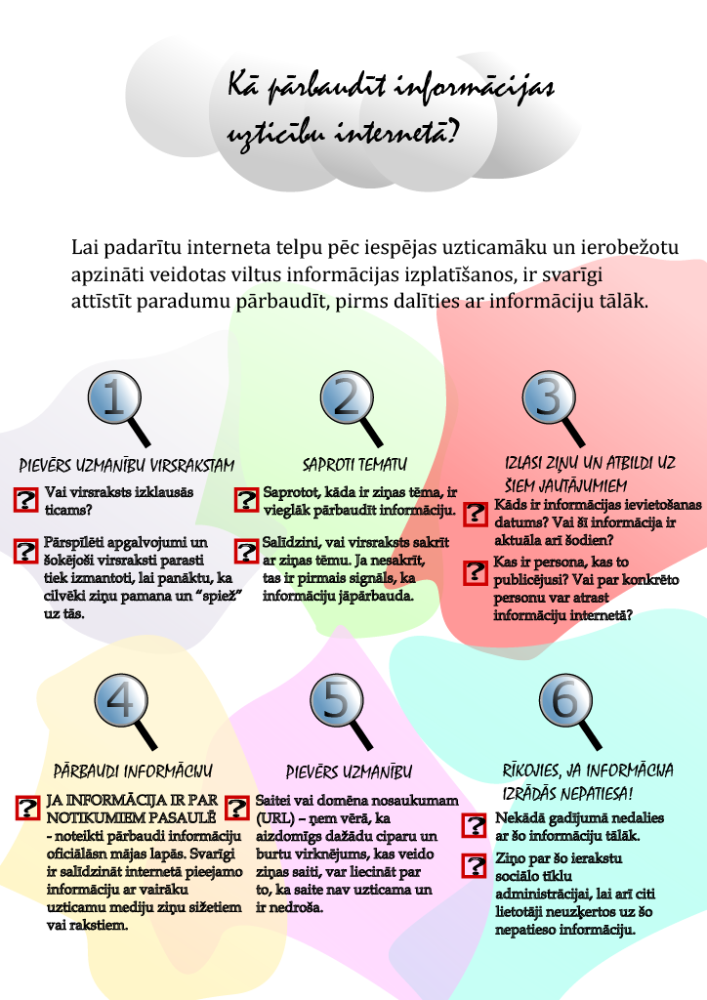

Individuālā tēma
Kā pārbaudīt informācijas avotu uzticamību?
Izmantojot sociālo tīklu platformas,
mēs piepildām dažādas vajadzības –
nepieciešamību pēc komunikācijas,
draudzības, atbalsta, uzmanības,
izklaides, izglītošanās un pašattīstības.
Mums ir neierobežotas iespējas
sazināties ar līdzīgi domājošiem
cilvēkiem no visas pasaules,
apmainīties ar informāciju par kopīgām
interesēm, sekot līdzi draugu, paziņu, kā
arī “influenceru” internetā ievietotajam
saturam. Tomēr šāda zibenīga un
neierobežota informācijas apmaiņa
ietver sevī arī riskus, kas saistīti ar
atrastās informācijas kvalitāti un
uzticamību.
Lai padarītu
interneta telpu pēc
iespējas uzticamāku
un ierobežotu
apzināti veidotas
viltus informācijas
izplatīšanos, ir svarīgi
attīstīt paradumu
pārbaudīt, pirms
dalīties ar informāciju
tālāk.
Ieteikumi, kā izvērtēt un pārbaudīt, vai publicētajai informācijai var uzticēties
- Pievērs uzmanību virsrakstam
- Vai virsraksts izklausās ticams?
- Pārspīlēti apgalvojumi un šokējoši virsraksti parasti tiek izmantoti, lai panāktu, ka cilvēki ziņu pamana un “spiež” uz tās.
- Saproti tematu
- Saprotot, kāda ir ziņas tēma, ir vieglāk pārbaudīt informāciju.
- Salīdzini, vai virsraksts sakrīt ar ziņas tēmu. Ja nesakrīt, tas ir pirmais signāls, ka informāciju jāpārbauda.
- Vai tas nav joks? Ja ziņa ir pārāk savāda, tā var būt joks. Labāk pārliecinies.
- Izlasi ziņu un atbildi uz šiem jautājumiem
- Kāds ir informācijas ievietošanas datums? Vai šī informācija ir aktuāla arī šodien?
- Kas ir persona, kas to publicējusi? Vai par konkrēto personu var atrast informāciju internetā?
- Kādas šai personai/organizācijai ir zināšanas par šo tēmu? Vai internetā ir atrodama informācija, ka persona specializējas šajos jautājumos vai organizācijas mājas lapā pieejama “Par mums” sadaļa?
- Kas īsti ir pateikts? Vai informācijā ir fakti jeb tikai apgalvojumi, kas balstīti uz vienas vai dažu personu viedokli?
- Pārbaudi informāciju
- JA INFORMĀCIJA IR PAR NOTIKUMIEM
PASAULĒ (piemēram, ziņas, politika, klimats,
zinātne) – noteikti pārbaudi informāciju oficiālās
mājas lapās. Svarīgi ir salīdzināt internetā
pieejamo informāciju ar vairāku uzticamu mediju
ziņu sižetiem vai rakstiem. Izmanto dažādus
informācijas kanālus – TV, radio, laikrakstus,
interneta ziņu portālus, lai papildus atrastajai
informācijai sociālo tīklu platformās vari to
salīdzināt ar informāciju, kuru profesionāli
pētnieciskie žurnālisti jau ir izpētījuši un
pārbaudījuši.
- JA INFORMĀCIJA IR PAR INFLUENCERI, tad meklē,
kā viņš pats komentē šo situāciju, varbūt ir oficiāla
atvainošanās vai paskaidrojuma video/ informācija.
- JA INFORMĀCIJA IR PAR KĀDU MŪZIKAS
ALBUMU, VIDEO SPĒLI VAI GRĀMATU, kas
drīzumā iznāks, tad to arī vienmēr pārbaudi šo
pakalpojumu sniedzēju oficiālajās mājas lapās
un sociālo tīklu kontos. Atceries, ka fanu lapās
informācija nav oficiāla un reizēm var sagādāt
vilšanos.
- JA INFORMĀCIJA IR PAR KĀDU TAVU PAZIŅU
VAI SKOLASBIEDRU.
Ja tas iespējams – pajautā cilvēkam, par kuru
baumas izplatītas, vai tās ir patiesas. Vienmēr
iedomājies sevi šīs personas vietā, par kuru baumas
ir izplatītas, un centies nebūt vienaldzīgs.
- Pievērs uzmanību
- Saitei un/vai domēna nosaukumam (URL) –
ņem vērā, ka aizdomīgs dažādu ciparu un burtu
virknējums, kas veido ziņas saiti, var liecināt par
to, ka saite nav uzticama un ir nedroša.
- Izpēti tīmekļa vietni, kurā ziņa publicēta, tās
misiju, kontaktinformāciju u.tml.
- Izpēti tekstā iekļautās saites. Vai tās ir saistītas
ar stāstu/ziņu?
- Izlasi komentārus, iespējams, kāds jau būs veicis
izpēti un brīdinājis komentāros citus lietotājus
- Rīkojies, ja informācija izrādās nepatiesa!
- Nekādā gadījumā nedalies
ar šo informāciju tālāk.
- Ziņo par šo ierakstu
sociālo tīklu
administrācijai, lai arī citi
lietotāji neuzķertos uz šo
nepatieso informāciju.
- Brīdini draugu vai paziņu,
ja pamani, ka viņš dalās ar
nepatiesu informāciju.

Šis ir mans plakāts par to, kā pārbaudīt informācijas avotu uzticamību internetā.
Ārējās saites: drossinternets, Utopia.